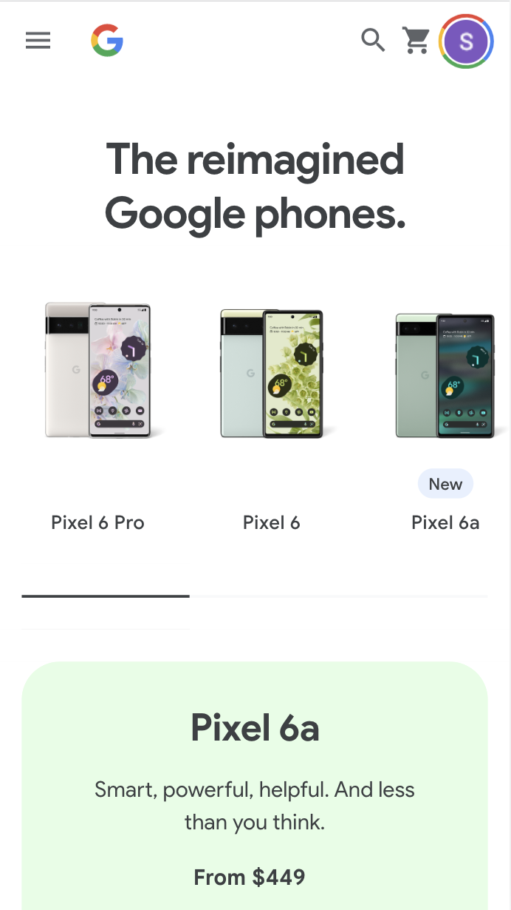
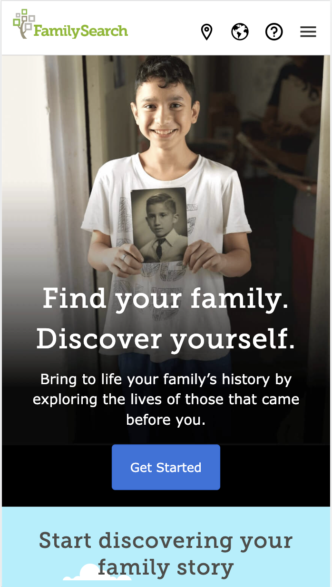

White Space
Google Pixel Store
https://store.google.com/category/phones?hl=en-US The white space design principle is shown through Google's website, because the elements on their page are nice and spread out. Nothing looks like it's too close together or claustraphobic.
Fitt's Law
Family Search
https://www.familysearch.org/en/ Family Search exemplifies Fitt's Law, because their "call to action" button is well placed for a mobile user's thumb to reach, making their website more efficient.
Visual Hierarchy
Lash Next Door
https://lashnextdoor.com/
The Lash Next Door website is a good example of the design principle visual hierarchy, because the hero image highlights what they want the user to see first. Their latest collection is easy to get to for the user.